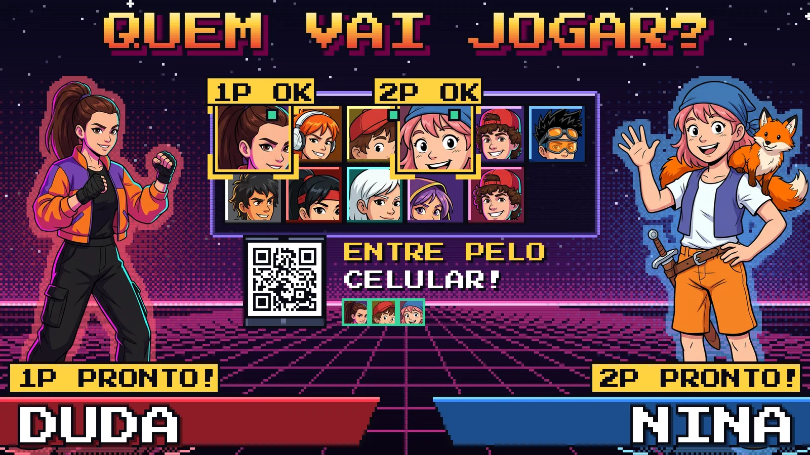
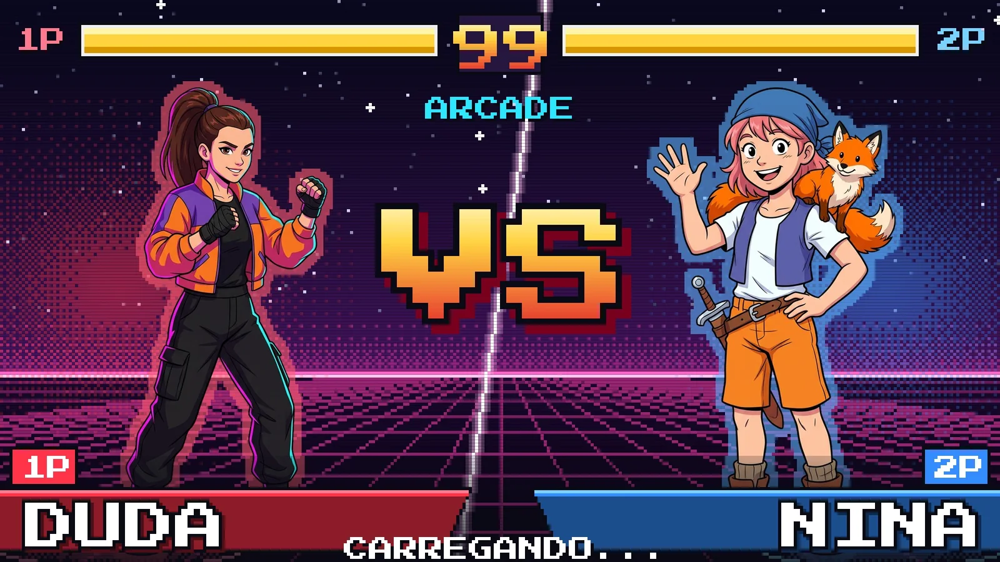

Manutenção da Raspberry (via WiFi)


Turbine seu fliperama
- QUEM VAI JOGAR? Cada um escolhe a própria cara antes de jogar.
- VERSUS e QUEM GANHOU? A luta é anunciada e a vitória vai para o placar.
- No celular de cada um. Fila de quem joga, ranking, torneio e escolher o jogo.
Ainda não tem o código? A compra é feita no site e o código chega na hora.
1 Seu código de compra
Depois de pagar no site, o código aparece na tela. Copie e cole aqui, do jeito que veio.
Código ativo
2 Instalar no fliperama
O fliperama precisa estar ligado e no mesmo Wi-Fi deste computador. Leva uns 2 minutos.
Pronto! Seu fliperama foi turbinado.
Aponte a câmera do celular para o código e crie o seu jogador. No próximo jogo aparece a tela QUEM VAI JOGAR?.